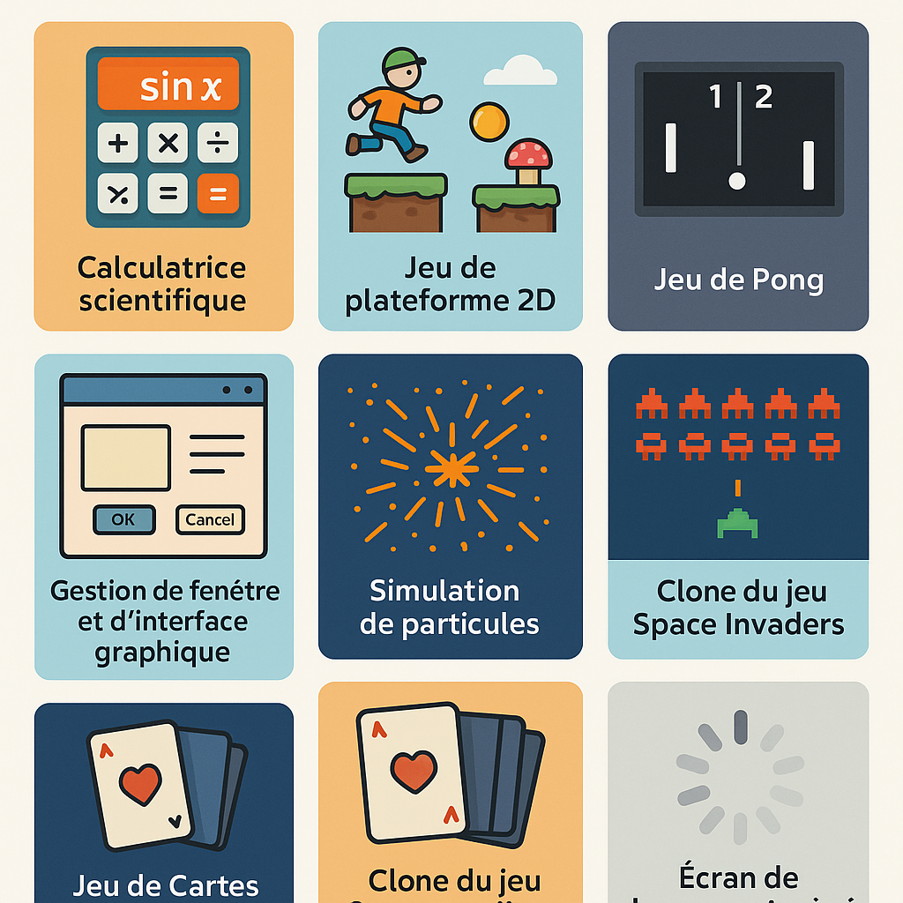

Application console en C# pour calculer des moyennes avec vérification des erreurs de saisie.

Jeu en C/C++
Développement d'un jeu simple en C/C++ avec interface graphique utilisant SDL.
Bulletin de notes
Ce projet est une application console en C# permettant la saisie de notes, le calcul automatique de moyennes, et la gestion des erreurs d’entrée utilisateur. Il m’a permis de mieux comprendre les structures de contrôle et la gestion des tableaux en C#.
Jeu en C/C++
Ce projet est un jeu développé en C/C++ utilisant la bibliothèque SDL pour la gestion graphique. Il m'a permis de comprendre les bases de la programmation orientée objet, la gestion des événements et le rendu 2D dans un environnement bas-niveau.